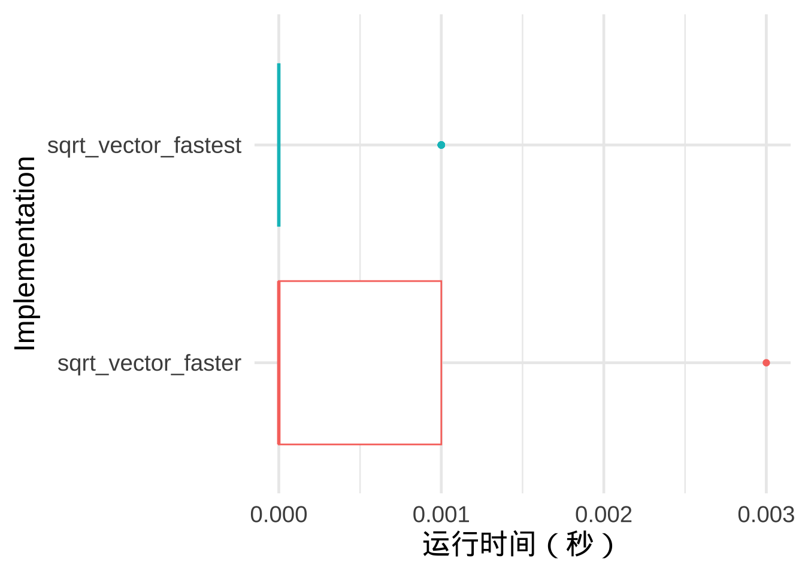

install.packages("foreign")
library(foreign)R语言基础
1 基本设置
1.1 安装和使用包
1.2 设置工作目录
R 有一个工作目录概念，会在工作目录下查找你要求它加载的文件，也会将你要求它保存的文件存放在这里。RStudio 会在控制台顶部显示你当前的工作目录。
如果只是单个简单代码脚本，可以在 R 内部设置工作目录。如果有多个脚本和各种格式的文件，建议建立项目文件。
setwd("~/Downloads/rproject/presention")
getwd()1.3 脚本和项目
尽可能的用脚本记录所有的操作，即从原始数据到最终的结果。避免保存中间结果，或者将环境中的变量保存下来，而是用脚本去还原。
RStudio 会在退出时自动保存脚本编辑器的内容，并在重新打开时自动重新加载。建议在退出前将脚本保存在合适的文件夹，避免使用“Untitled1”、“Untitled2”、“Untitled3”之类的名称，而是保存为可理解的文件名。
文件名命名原则如下：
- 文件名应易于机器识别：避免使用空格、符号和特殊字符。不要依赖大小写来区分文件。
- 文件名应该是人类可读的：使用文件名来描述文件中的内容。
- 文件名应该与默认运行顺序一致：文件名以数字开头，以便按字母顺序排列使用顺序。
01-load-data.R
02-exploratory-analysis.R
03-model-approach-1.R
04-model-approach-2.R
fig-01.png
fig-02.png
report-2022-03-20.qmd
report-2022-04-02.qmd
report-draft-notes.txt将与给定项目相关的所有文件（输入数据、R 脚本、分析结果和图表）放在一个目录中更为方便。RStudio 通过项目文件进行支持。单击“文件”>“新建项目”，然后按照提示步骤操作。
新建项目后，在脚本编辑器中输入命令保存文件，运行完整的脚本，RStudio会自动将新生成的 文件保存到项目文件夹。关闭编辑器后，可以通过项目文件夹中.Rproj文件重新打开项目，继续上次的工作。
2 基本运算
2 + 2 ## 加[1] 49 - 4 ## 减[1] 56 * 12 ## 乘[1] 7286 / 4 ## 除[1] 21.52 ^ 8 ## 次方[1] 256log(12) ## 自然对数 [1] 2.484907exp(2) ## e的指数[1] 7.3890562 / 9 ^ 2 == 2 / 81 [1] TRUE2 / 9 ^ 2 == (2/9) ^ 2[1] FALSE3 创建数据对象
3.1 单个元素的对象（整数、小数、字符串、逻辑符号）
integer_obj <- 4 ## 整数
numeric_obj <- 4.39053 ## 实数
string_obj <- "This is a string" ## 字符串
logical_obj <- TRUE ## 逻辑符号 3.2 多个元素组成的对象
向量
vector_of_integers <- c(3, 9, 10, 4)
vector_of_integers[1] 3 9 10 4vector_of_numerics <- rep(4.39024, 10) # rep函数赋值
vector_of_numerics [1] 4.39024 4.39024 4.39024 4.39024 4.39024 4.39024 4.39024 4.39024 4.39024
[10] 4.39024sequentialvec <- 1:10 #冒号赋值
backwardssequence <- 10:1
seqvec2 <- seq(0, 50, 10) #seq函数赋值
sequentialvec [1] 1 2 3 4 5 6 7 8 9 10backwardssequence [1] 10 9 8 7 6 5 4 3 2 1seqvec2[1] 0 10 20 30 40 50向量的运算
vector_of_integers - 2 * vector_of_integers [1] -3 -9 -10 -4vector_of_integers[1] 3 9 10 4向量中元素的选择
vector_of_integers[1] 3 9 10 4vector_of_integers[1] [1] 3vector_of_integers[2:4] [1] 9 10 4# 求平均值
mean_of_vector_of_integers <- mean(vector_of_integers)
mean_of_vector_of_integers[1] 6.5练习：创建一个包含100到200之间所有整数的向量seq12，求其平均值，并赋值给mean12
seq12 <- seq(100,200,1)
mean12 <- mean(seq12)
mean12[1] 150矩阵
- 采用向量创建矩阵
vector_of_integers[1] 3 9 10 4two_by_two_matrix <- matrix(vector_of_integers, nrow=2, ncol=2)
two_by_two_matrix [,1] [,2]
[1,] 3 10
[2,] 9 4- 选择特定的矩阵元素
two_by_two_matrix[1,2] [1] 10two_by_two_matrix[,2] [1] 10 4two_by_two_matrix[,1][1] 3 9- 矩阵加法、矩阵按元素相乘、矩阵乘法
two_by_two_matrix + two_by_two_matrix [,1] [,2]
[1,] 6 20
[2,] 18 8two_by_two_matrix * two_by_two_matrix [,1] [,2]
[1,] 9 100
[2,] 81 16two_by_two_matrix %*% two_by_two_matrix [,1] [,2]
[1,] 99 70
[2,] 63 1064 布尔运算
2 == 2 ## 相等，注意 == 代表布尔运算，= 代表赋值[1] TRUE2 != 2 ## 不相等[1] FALSE4 > 2 ## 大于[1] TRUE4 >= 2 ## 大于或等于[1] TRUE2 < 4 ## 小于[1] TRUE2 <= 4 ## 小于或等于[1] TRUE!(4 > 2) # 返回 FALSE[1] FALSE2==2 & 4==2 ## 采用&和|来连接布尔运算 [1] FALSE2==2 | 4==2 [1] TRUEc(3,5,2,0,-4,-5) > 0[1] TRUE TRUE TRUE FALSE FALSE FALSEfull <- state.name ## 系统存储的美国各州名单
full[1:10] [1] "Alabama" "Alaska" "Arizona" "Arkansas" "California"
[6] "Colorado" "Connecticut" "Delaware" "Florida" "Georgia" pacstates <- c("Washington", "Oregon", "California", "Alaska", "Hawaii")
!(full %in% pacstates)[1:10] [1] TRUE FALSE TRUE TRUE FALSE TRUE TRUE TRUE TRUE TRUEfull[!(full %in% pacstates)] [1] "Alabama" "Arizona" "Arkansas" "Colorado"
[5] "Connecticut" "Delaware" "Florida" "Georgia"
[9] "Idaho" "Illinois" "Indiana" "Iowa"
[13] "Kansas" "Kentucky" "Louisiana" "Maine"
[17] "Maryland" "Massachusetts" "Michigan" "Minnesota"
[21] "Mississippi" "Missouri" "Montana" "Nebraska"
[25] "Nevada" "New Hampshire" "New Jersey" "New Mexico"
[29] "New York" "North Carolina" "North Dakota" "Ohio"
[33] "Oklahoma" "Pennsylvania" "Rhode Island" "South Carolina"
[37] "South Dakota" "Tennessee" "Texas" "Utah"
[41] "Vermont" "Virginia" "West Virginia" "Wisconsin"
[45] "Wyoming" 5 函数
mean(c(2,3,10,3,NA), na.rm = TRUE) [1] 4.5mean(x = c(2,3,10,3)) [1] 4.5自定义函数
add_2 <- function(x){
k <- x + 2 # 加 2
return(k) # 返回 k
}
adding_2_to_6 <- add_2(6)
adding_2_to_6[1] 8练习：编写函数对向量元素进行开3次幂并除以自然对数的计算，并返回值
example <- function(x){
return(x^(1/3) / log(x))
}
example(5:10)[1] 1.0624678 1.0141543 0.9830522 0.9617967 0.9466869 0.93565916 条件执行
x <- 1000000
if(x > 10000){
"x非常大"
}[1] "x非常大"if(x < 10000){
"x并不大"
}
x <- 1
if(x > 10000){
"x非常大"
} else{
"x并不大"
}[1] "x并不大"ifelse(x > 10000,
"x非常大",
"x并不大")[1] "x并不大"y <- "数学！"
if(!is.numeric(y)) {
"y 不是数字格式"
} else if(y == 10000){
"y等于10000"
} else if(y > 10000){
"y非常大"
} else{
"y并不大"
}[1] "y 不是数字格式"ifelse(!is.numeric(y),
"y 不是数字格式",
ifelse(y == 10000,
"y 等于10000",
ifelse(y > 10000,
"y 非常大",
"y 并不大")))[1] "y 不是数字格式"7 重复与循环
for(i in 1:5){
print(i)
}[1] 1
[1] 2
[1] 3
[1] 4
[1] 5for(i in seq(1,5)){
print(i)
}[1] 1
[1] 2
[1] 3
[1] 4
[1] 5index <- c("look", "how", "fancy", "we", "can",
"be", "with", "loop", "indexes")
for(i in index){
print(i)
}[1] "look"
[1] "how"
[1] "fancy"
[1] "we"
[1] "can"
[1] "be"
[1] "with"
[1] "loop"
[1] "indexes"for(i in 1:10){
for(j in 50:60){
## some sort of code...
}
}8 数据框
8.1 读入数据生成数据框
houses_data <- read.table(file = "houses.txt", header = T, sep = "\t")8.2 数据框的基础操作
head(houses_data) PRICE SQFT AGE FEATS NE CUST COR TAX
1 2050 2650 13 7 1 1 0 1639
2 2080 2600 * 4 1 1 0 1088
3 2150 2664 6 5 1 1 0 1193
4 2150 2921 3 6 1 1 0 1635
5 1999 2580 4 4 1 1 0 1732
6 1900 2580 4 4 1 0 0 1534houses_data$PRICE[1:20] [1] 2050 2080 2150 2150 1999 1900 1800 1560 1450 1449 1375 1270 1250 1235 1170
[16] 1180 1155 1110 1139 995houses_data[houses_data$SQFT > 2500,][1:5,] PRICE SQFT AGE FEATS NE CUST COR TAX
1 2050 2650 13 7 1 1 0 1639
2 2080 2600 * 4 1 1 0 1088
3 2150 2664 6 5 1 1 0 1193
4 2150 2921 3 6 1 1 0 1635
5 1999 2580 4 4 1 1 0 1732names(houses_data)[1] "PRICE" "SQFT" "AGE" "FEATS" "NE" "CUST" "COR" "TAX" houses_data[1:10,1] [1] 2050 2080 2150 2150 1999 1900 1800 1560 1450 1449sq.ft.price <- NULL # 创建一个对象
for(i in 1:10000){
sample.data <- houses_data[sample(1:nrow(houses_data), 100),]
price.persqft <- sample.data$PRICE / sample.data$SQFT # 建立代表单位面积价格的变量
sq.ft.price[i] <- mean(price.persqft) # 将每个样本均值存入向量
}
hist(sq.ft.price)9 绘图
- 直方图
hist(c(1,1,2,2,3,3,3,3), main = "直方图示例", xlab = "变量") - 散点图
plot(x = c(1,2,3,4,5), y = c(4,2,0,1,4), col = "Red", xlab ="x",ylab = "y",
pch = 18) ## 点的形状 10 获取帮助
10.1 R 语言自带帮助系统
??mean
?mean10.2 AI工具
把想要实现的操作描述清楚或者直接把控制台反馈的错误信息贴入deepseek，一般能给出比较好的解决方案。此外，Rstudio的插件Copilot也能提供代码自动补齐和自动编写等功能。
10.3 网上搜索
Stack Overflow http://stackoverflow.com/questions/tagged/r
拷贝报错信息，Google，一般都能查到解决问题的办法。
11 代码风格
11.1 命名
对象名称必须以字母开头，并且只能包含字母、数字、_ 和.。对象名称应具有描述性，可以采用多词命名规范，推荐使用snake_case 格式，即用_ 分隔小写单词。在编写代码时，简短名称（a1，b2等）节省的时间相对较少（尤其是自动完成功能可以帮助完成输入），但调试较长的代码时，会难以理解和回忆起缩写代表的变量，需要反复确认，可能会更耗时。
11.2 空格
除幂符号^外，数学运算符两边（即 +，-，*，/，==，<等）以及赋值运算符（<-）周围都应加上空格。
# 好的代码风格
z <- (a + b)^2 / d
# 不好的代码风格
z<-( a + b ) ^ 2/d对于常规函数调用，不要在括号内外添加空格。逗号后始终添加空格，就像标准英语一样。
# 好的代码风格
mean(x, na.rm = TRUE)
# 不好的代码风格
mean (x ,na.rm=TRUE)如果能提高对齐效果，方便浏览代码，添加额外的空格让代码看起来更齐整也是可以的。
flights |>
mutate(
speed = distance / air_time,
dep_hour = dep_time %/% 100,
dep_minute = dep_time %% 100
)11.3 注释
# 号后的内容会被R语言看做是文本注释，不会运行。添加注释可以帮助其他人理解代码，也帮助自己以后调试理解代码。注释的内容可以重点解释为什么这么做（例如，为什么要更改默认的参数等）。
如果代码脚本很长，可以使用分段注释将文件分解为易于管理的部分。
# 数据获取 --------------------------------------
# 数据绘图 --------------------------------------RStudio 提供了键盘快捷键来创建这些标题（Cmd/Ctrl + Shift + R），并将它们显示在编辑器左下方的代码导航下拉菜单中。在脚本中添加分段注释后，可以使用脚本编辑器左下角的代码导航工具轻松导航到它们。
12 数据导入
本部分介绍如何使用 readr 包加载数据文件，该包是核心 tidyverse 的一部分。
library(tidyverse)12.1 从文件中读取数据
常见的CSV逗号分隔值文件，第一行通常为标题行，包含列名，列之间使用逗号分隔。
Student ID,Full Name,favourite.food,mealPlan,AGE
1,Sunil Huffmann,Strawberry yoghurt,Lunch only,4
2,Barclay Lynn,French fries,Lunch only,5
3,Jayendra Lyne,N/A,Breakfast and lunch,7
4,Leon Rossini,Anchovies,Lunch only,
5,Chidiegwu Dunkel,Pizza,Breakfast and lunch,five
6,Güvenç Attila,Ice cream,Lunch only,6| Student ID | Full Name | favourite.food | mealPlan | AGE |
|---|---|---|---|---|
| 1 | Sunil Huffmann | Strawberry yoghurt | Lunch only | 4 |
| 2 | Barclay Lynn | French fries | Lunch only | 5 |
| 3 | Jayendra Lyne | N/A | Breakfast and lunch | 7 |
| 4 | Leon Rossini | Anchovies | Lunch only | NA |
| 5 | Chidiegwu Dunkel | Pizza | Breakfast and lunch | five |
| 6 | Güvenç Attila | Ice cream | Lunch only | 6 |
使用 read_csv() 函数读入，参数是文件的路径。
students <- read_csv("students.csv")运行后，会显示数据的行数和列数、使用的分隔符以及列规格（按列的数据类型组织的列名）。 读取数据后，第一步通常是进行一些转换，使其更易于在后续分析中使用。
students# A tibble: 6 × 5
`Student ID` `Full Name` favourite.food mealPlan AGE
<dbl> <chr> <chr> <chr> <chr>
1 1 Sunil Huffmann Strawberry yoghurt Lunch only 4
2 2 Barclay Lynn French fries Lunch only 5
3 3 Jayendra Lyne N/A Breakfast and lunch 7
4 4 Leon Rossini Anchovies Lunch only <NA>
5 5 Chidiegwu Dunkel Pizza Breakfast and lunch five
6 6 Güvenç Attila Ice cream Lunch only 6 检查数据，发现需要处理缺失值、重新命名变量、定义分类变量、修正变量值等。
# 将字符字符串 N/A 识别为缺失值 NA
students <- read_csv("students.csv", na = c("N/A", ""))
# 对不符合命名规范的变量名进行重命名
students |>
rename(
student_id = `Student ID`,
full_name = `Full Name`
)# A tibble: 6 × 5
student_id full_name favourite.food mealPlan AGE
<dbl> <chr> <chr> <chr> <chr>
1 1 Sunil Huffmann Strawberry yoghurt Lunch only 4
2 2 Barclay Lynn French fries Lunch only 5
3 3 Jayendra Lyne <NA> Breakfast and lunch 7
4 4 Leon Rossini Anchovies Lunch only <NA>
5 5 Chidiegwu Dunkel Pizza Breakfast and lunch five
6 6 Güvenç Attila Ice cream Lunch only 6 # janitor包能将不规范的命名改变成规范命名
students <- students |> janitor::clean_names()
# 将变量转化为因子
students <- students |>
mutate(meal_plan = factor(meal_plan))
# 修正变量值
students <- students |>
mutate(age = parse_number(if_else(age == "five", "5", age)))
students# A tibble: 6 × 5
student_id full_name favourite_food meal_plan age
<dbl> <chr> <chr> <fct> <dbl>
1 1 Sunil Huffmann Strawberry yoghurt Lunch only 4
2 2 Barclay Lynn French fries Lunch only 5
3 3 Jayendra Lyne <NA> Breakfast and lunch 7
4 4 Leon Rossini Anchovies Lunch only NA
5 5 Chidiegwu Dunkel Pizza Breakfast and lunch 5
6 6 Güvenç Attila Ice cream Lunch only 612.2 控制列类型
CSV文件不包含变量类型（例如逻辑型、数字型、字符串等）的信息，因此 readr 会尝试猜测类型。每一列抽取1000行的值，依次判断是否为逻辑性、数字型、日期型变量，如果都是不是，便为字符串。但是现实中，常常由于数据集不采用NA标注缺失值，采用其他字符标注（例如，.或者-等），导致数值型变量被判断为字符串。
simple_csv <- "
x
10
.
20
30"
read_csv(simple_csv)# A tibble: 4 × 1
x
<chr>
1 10
2 .
3 20
4 30 可以使用 col_types 参数来测试，如果报错，则采用problems() 了解更多信息。
df <- read_csv(
simple_csv,
col_types = list(x = col_double())
)
problems(df)# A tibble: 1 × 5
row col expected actual file
<int> <int> <chr> <chr> <chr>
1 3 1 a double . /private/var/folders/3r/j3j4w0015hd4fxnyycp4nf6m0…再设置新的缺失值 na = "."，得到符合要求的数字列。
read_csv(simple_csv, na = ".")# A tibble: 4 × 1
x
<dbl>
1 10
2 NA
3 20
4 30readr 提供了九种列类型，包括 col_logical() 、col_double()、col_integer()、 col_character() 、 col_factor()、col_date() 和 col_datetime()，分别创建逻辑值、小数、整数、字符串、因子、日期和日期时间等列类型；col_number() 是宽松的数字解析器，会忽略非数字组件，可以表示货币，col_skip() 可以跳过某些数据列不读取。
12.3 从多个文件中读取数据
sales_files <- c("data/01-sales.csv", "data/02-sales.csv", "data/03-sales.csv")
# `id` 参数会在结果数据框中添加一个名为 `file` 的新列，用于标识数据来自哪个文件。
read_csv(sales_files, id = "file")
# 可以使用基础函数 `list.files()` 通过匹配文件名中的模式来查找文件，避免逐一写文件名
sales_files <- list.files("data", pattern = "sales\\.csv$", full.names = TRUE)
sales_files12.4 写入文件
write_csv(students, "students.csv")如果不希望列的数据结构信息消失，可以采用write_rds() 和 read_rds() 替代。
write_rds(students, "students.rds")
read_rds("students.rds")13 大数据编程
13.1 监测代码的表现
在 R 中编写用于处理大数据的数据分析脚本时，建议先用少量子样本测试脚本的关键代码。为了快速识别潜在的瓶颈，可以使用一些 R 包来精确跟踪脚本各部分的处理时间以及内存占用。
处理时间
# 获取循环代码运行的时间（每次依照计算机的进程会略有不同）
system.time(for (i in 1:100) {i + 5}) user system elapsed
0.001 0.000 0.001 library(microbenchmark)
# 获取代码运行时间的统计信息
microbenchmark(for (i in 1:100) {i + 5})Unit: microseconds
expr min lq mean median uq
for (i in 1:100) { i + 5 } 622.831 657.681 746.9421 683.8595 732.3215
max neval
4786.832 100内存占用
hello <- "Hello, World!"
# 获取对象大小
object.size(hello)120 bytes# 创建字符串大向量
large_string <- rep(LETTERS[1:20], 1000^2)
head(large_string)[1] "A" "B" "C" "D" "E" "F"# 转换成因子
large_factor <- as.factor(large_string)
# 比较字符串对象与因子对象内存占用的大小
object.size(large_string) - object.size(large_factor)79999456 bytes快速检测代码瓶颈
library(profvis)
# 分析代码的表现
profvis({
x <- 1:10000
z <- 1.5
# 方法一：采用循环向量元素依次相乘
multiplication <-
function(x,z) {
result <- c()
for (i in 1:length(x)) {result <- c(result, x[i]*z)}
return(result)
}
result <- multiplication(x,z)
# 方法二：直接向量乘法
result2 <- x * z
head(result2)
})运行后，会用可视化的方式显示每行代码占用内存和运行时间的信息。
13.2 预先分配足够内存
对象初始化时，会在内存中的某个位置默认占用少量内存。一旦对象增长，如果没有足够的空间，需要将其移动到空间更大的位置。这种重新分配内存的操作，需要时间，会减慢整个进程的速度。因此，更有效的代码应该预先分配足够的内存。
# 未预先分配足够内存
sqrt_vector <-
function(x) {
output <- c()
for (i in 1:length(x)) {
output <- c(output, x[i]^(1/2))
}
return(output)
}
# 预先分配足够内存
sqrt_vector_faster <-
function(x) {
# 根据参数x的长度，预先分配output占用的内存
output <- rep(NA, length(x))
for (i in 1:length(x)) {
output[i] <- x[i]^(1/2)
}
return(output)
}两种代码的运行时间对比如图。
13.3 使用向量化的R函数
许多 R 函数（例如数学运算符）都是向量化的，即操作直接作用于向量，从而利用向量中每个元素的相似性，从而可以增强运行效率。相对地，如果采用循环，R 必须在每次迭代中一遍又一遍地重复相同的准备步骤，会增加运行时间。
# 向量化的运行，不使用循环迭代
sqrt_vector_fastest <-
function(x) {
output <- x^(1/2)
return(output)
}比较运行时间

即使没有可用的向量化 R 基础函数，也建议不要编写简单的循环，尽量使用 apply 型的函数来避免内存分配问题。
13.4 避免不必要的复制对象
R 脚本对于复制对象（b <- a）是将两个不同的名称（a和b）指向同一个存储空间（例如，一个非常大的文本向量）。但是，如果对某个名称的元素进行了改变（a[1] <- 0），那么R会复制一个存储空间来区分两个名称所指的对象，相当于占用空间扩大一倍。
a <- runif(10000)
b <- a
library(lobstr)
# 检查两个名称对象的地址
obj_addr(a)[1] "0x130948000"obj_addr(b)[1] "0x130948000"a[1] <- 0
obj_addr(a)[1] "0x158728000"obj_addr(b)[1] "0x130948000"13.5 及时释放内存
如果在程序运行过程中，不再需要某个较大的中间数据对象，可以通过 rm() 函数及时删除，释放紧张的内存。
library(pryr)
mem_change(large_vector <- runif(10^8))800 MBmem_change(rm(large_vector))-800 MB13.5 必要时使用低级语言
R 是一种解释型语言，运行代码时由解释器逐条将代码翻译成机器码运行。而低级的编译型语言是将代码整体编译成机器码，然后运行。运行已编译的代码比运行必须先逐条解释的代码快得多。事实上，R 的一些核心函数都是用低级编程语言实现的，调用的 R 函数只是与这些函数进行交互，例如 sum 函数等。必要时可以通过R语言调用低级语言编写的代码（例如data.table包），增加运行的速度。
参考书籍
- Hadley Wickham, Mine Cetinkaya-Rundel, Garrett Grolemund. R for Data Science: Import, Tidy, Transform, Visualize, and Model Data, (2nd edition)，O’Reilly Media, 2023.
- Kabacoff （王小宁等译） R语言实战（第3版），人民邮电出版社，2023.
- Ulrich Matter Big Data Analytics: A Guide to Data Science Practitioners Making the Transition to Big Data, CRC Press, 2024.